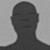
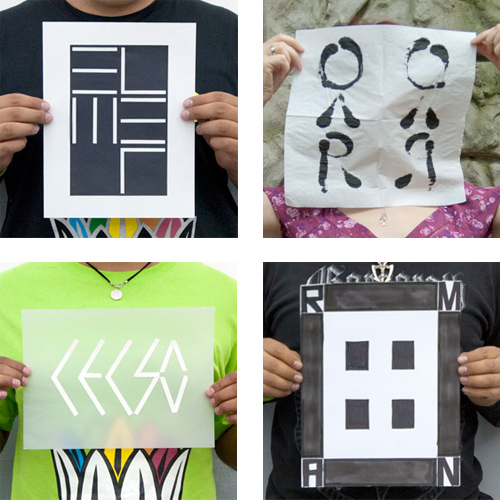
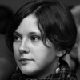
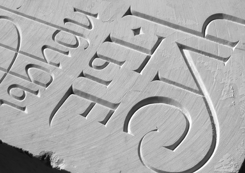
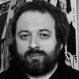
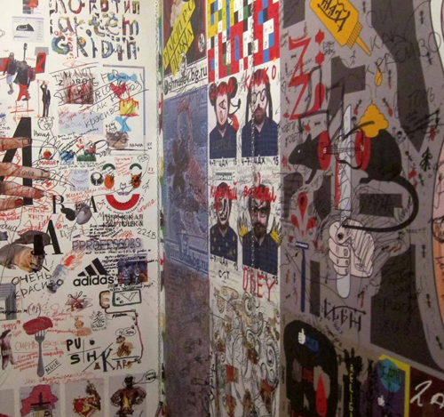
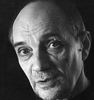
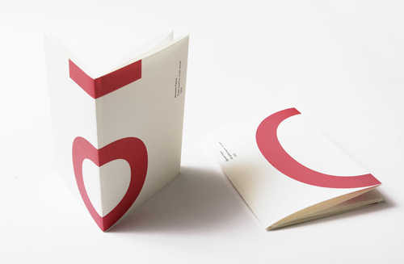
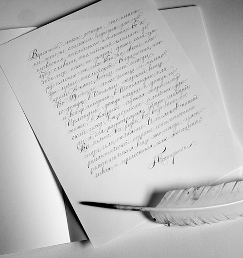
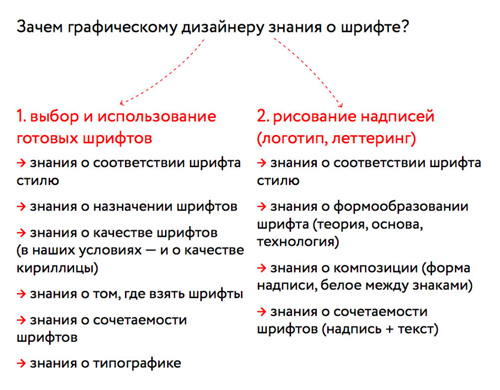

26-27 апреля
|  |
мастер-класс
«… – знак – логотип – плакат» / 3 000 руб. ведущий: |
|  | |
| программа: | Девиз Чайки: Противопоставим порядок хаосу. «Дизайн — это когда порядок навести, мусор, скажем, выбросить, а нужное — по полочкам». В двухдневном мастер-классе совмещены теория и практика, работа на компьютере и ручное эскизирование, лекции и решение поставленных задач. |
| расписание: | 26 апреля (суббота) 12.00 – 15.00 27 апреля (воскресенье) 12.00 – 15.00 |
| вам понадобится: |
Компьютер с привычными вам графическими редакторами. (Если у вас нет лэптопа, организаторы предоставят стационарный компьютер). Фотоаппарат или смартфон (не обязательно). Привычные вам материалы для эскизов (карандаши, фломастеры, мел, ножницы, резак, скотч, клеющий карандаш, бумага черная, цветная). Организаторы предоставят белую бумагу, простые карандаши, чёрные фломастеры, кисти и чёрную тушь. |
| адрес: | Москва, Протопоповский переулок, 9 стр. 1. |
11-13 апреля
|  |
учебный интенсив
третий рим/ 6 000 руб. ведущий: |
|  | |
| программа: | Carving включён в образовательные программы многих профильных учебных заведений, в частности, Королевской академии искусств в Гааге. Как и каллиграфия, эти занятия помогают почувствовать фундаментальные принципы формообразования. За три дня вы пройдёте процесс вырезания букв на мраморе от начала до конца. Познакомитесь с римскими капитальными буквами и научитесь их рисовать. Перенесёте нарисованные буквы на мрамор и вырубите их в камне. Узнаете все секреты ремесла: как держать инструмент — под каким углом к поверхности и ребру буквы, откуда начинать рубить, с какой стороны должен падать свет, что делать, чтобы куски мрамора не откалывались, и многое другое. Мраморную плиту с вырезанными буквами заберёте с собой в качестве трофея и установите на почётном месте. Заранее продумайте, какие буквы будете вырезать. Лучше, чтобы их было не больше трёх, иначе не успеете. Впрочем, можете завершить работу дома. Организаторы предоставляют все материалы и инструменты. |
| расписание: | 11 апреля пятница 18.00 — 21.00 12 апреля суббота 12.00 — 15.00, 15.30 — 18.30 13 апреля воскресенье 12.00 — 15.00, 15.30 — 18.30 |
| адрес: | Москва, Протопоповский переулок, 9 стр. 1. |
30 марта
|  |
мастер-класс
дизайн участия / 3 000 руб. ведущий: |
|  | |
| Дизайн участия подразумевает разработку проектов с активным вовлечением публики в рабочий процесс . Дизайнер проектирует не готовый продукт, а создаёт инструменты, среду, условия для творчества других дизайнеров или случайных пользователей. | |
| программа: | Первая часть. Лекция на тему «Дизайн участия, открытые/закрытые системы, примеры проектов с открытым финалом». Вторая часть. Постановка задачи, самостоятельная работа над проектом, консультации. Третья часть. Презентация проектов. Обсуждение. |
| расписание: | 30 марта воскресенье 12.00-15.00, 15.30-18.30 |
| вам понадобится: | Компьютер с установленным Photoshop. Если у вас нет лэптопа, организаторы предоставят вам стационарный компьютер. |
| адрес: | Москва, Протопоповский переулок, 9 стр. 1. |
14-16 марта
|  |
учебный интенсив
практическая типографика, опыт работы с книгой / 6 000 руб. ведущие: Алексей Веселовский |
|  | |
| круг вопросов: | Как сделать книгу (многостраничник, каталог, альбом). Известные способы, малоизвестные и совсем не известные. Что в книге главное — стратегия, конструкция или алгоритм. Как работать со смыслами? Для чего структурировать текст, он друг или враг. Зависимость издания от бюджета, материалов и печати. Как представить себе образ готового издания, полученного из типографии. Что делать с изображением, с эмоциональной составляющей и как ворох вопросов привести к стройному плану ответов. |
| лекционная часть: | Как сделать книгу (многостраничник, каталог, альбом). Типографика — фундамент графического дизайна и основа визуального языка. Элементы книги — важнейшие составные части книжного организма. Материалы и технологии, их взаимосвязь с пластическими и образными задачами. Возможности и ограничения технологии, традиционные каноны и новый взгляд на оформление книги. |
| практическая часть: | Режем, клеим, печатаем методами высокой печати и пошуар, складываем, подбираем, фальцуем, обрезаем. Наслаждаемся готовым продуктом. |
| конечная цель: | Собрать несколько принципиальных макетов изданий и сделать короткую презентацию готового продукта. |
| вам понадобятся: | Различные виды бумаги — цветной, дизайнерской, простой, — с которыми вам хотелось бы работать. Формат А4-А3. Металлическая линейка 30-50 см. Макетный нож. Доска для разрезания. Резиновый клей или клей-карандаш. Скотч узкий прозрачный, скотч двусторонний. Фломастер широкий и тонкий, карандаши и прочий любимый инструмент. Если есть опыт гравюры на пластике, можно прихватить штихеля, валики. Пластик дадим. |
| расписание: | 14 марта пятница 18.00 — 21.00 15 марта суббота 12.00 — 15.00, 15.30 — 18.30 16 марта воскресенье 12.00 — 15.00, 15.30 — 18.30 |
| адрес: | Москва, Протопоповский переулок, 9 стр. 1. |
2-4 марта
|
учебный интенсив
довесок к букве ща / 4 800 руб. ведущий: |
|  | |
| программа: | Начальная школа каллиграфии Четыре трехчасовых урока для терпеливых и внимательных Теоретические и практические основы красивого письмаНа фоне практических занятий разговоры на темы: Графема и инструмент Каллиграфия как след жеста Рисовать или писать Письмо и почерк Каллиграфия между темой и импровизацией Занятия каллиграфией как медитативной практикой Каллиграфия как стимулятор креативных возможностей Абитуриенты обязаны подготовить по десять вопросов о каллиграфии, письме, почерке и шрифтеРекомендовано всем, кроме постоянных учеников Школы Добровинского |
| расписание: | 2 марта воскресенье 12.00 — 15.00, 15.30 — 18.30 3 марта понедельник 18.00 — 21.00 4 марта вторник 18.00 — 21.00 |
| адрес: | Москва, Протопоповский переулок, 9 стр. 1. |
14-16 февраля
|
учебный интенсив
шрифт как неочевидное / 6 000 руб. ведущий: |
|  | |
| программа: | Теория и практика шрифта. Лекции перемежаются с каллиграфией, леттерингом и проектированием. Особое внимание уделено кириллице. Рекомендовано графическим дизайнерам, студентам профильных вузов и всем, кто хочет расширить свои знания и усовершенствовать навыки в области шрифта. 8 февраля на Дне открытых дверей Александра расскажет о своей программе чуть подробнее |
| вам понадобятся: | • Компьютер с установленной демо-версией FontLab и программой вёрстки, желательно InDesign (если у вас нет лэптопа, организаторы предоставят вам стационарный компьютер); • Смартфон или фотоаппарат.Все остальные материалы и технику организаторы предоставят централизованно. Но если у вас есть собственные любимые инструменты (перья, кисти, бумага), приносите их с собой. |
| расписание: | 14 февраля 18.00 — 21.00 15 февраля 13.00 — 16.00, 16.30 — 19.30 16 февраля 13.00 — 16.00, 16.30 — 19.30 |
| адрес: | Москва, Протопоповский переулок, 9 стр. 1. |
8 февраля
| Дорогие друзья!Серебро Набора приглашает вас в субботу 8 февраля в 14-00 на День открытых дверей.
В начале встречи ведущие ближайших учебных интенсивов — Александра Королькова, Евгений Добровинский, Дмитрий Кавко, Борис Трофимов, Алексей Веселовский и Ольга Умпелева — коротко расскажут о своих предстоящих занятиях, после чего вас ждёт история, не менее увлекательная, чем сериал о Шерлоке Холмсе. Директор компании ПараТайп Эмиль Якупов, патентный поверенный РФ, руководитель практики агентства юридической безопасности Интеллект-С Максим Лабзин и директор юридического агенства ЛоГард Валентин Вольнов расскажут о беспрецедентном судебном процессе по защите авторских прав в области дизайна шрифта, завершившегося вынесением положительного вердикта президиумом Высшего арбитражного суда. Вы узнаете о юридической стороне производства и приобретения шрифтов всё, о чём стеснялись или боялись спросить. Как уменьшить расходы на приобретение шрифтов и увеличить доходы от их продажи. Встреча пройдёт в Институте бизнеса и дизайна по адресу: Вход по предварительной бесплатной регистрации. На Дне открытых дверей будет организована онлайн-трансляция. Во время встречи вы сможете позвонить нам в Скайп и задать свой вопрос. Имя в Скайпе serebronabora. |